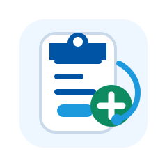

KORAIL Health Desk
KORAIL 검진관리
검진 안내부터 유해인자 확인까지, 스마트하게 해결하세요.

⭐ 본인 소속 상관없이 전국 어디서나 건강검진이 가능합니다.
소속 선택
소속기관 검진 안내자료 조회
선택한 소속기관의 건강진단 안내자료가 아래에 자동으로 표시됩니다.
건강진단 안내자료
본사 2026년 건강진단 직원 안내자료
웹앱 미리보기 안내
소속기관을 선택하면 해당 자료가 화면에 표시됩니다.